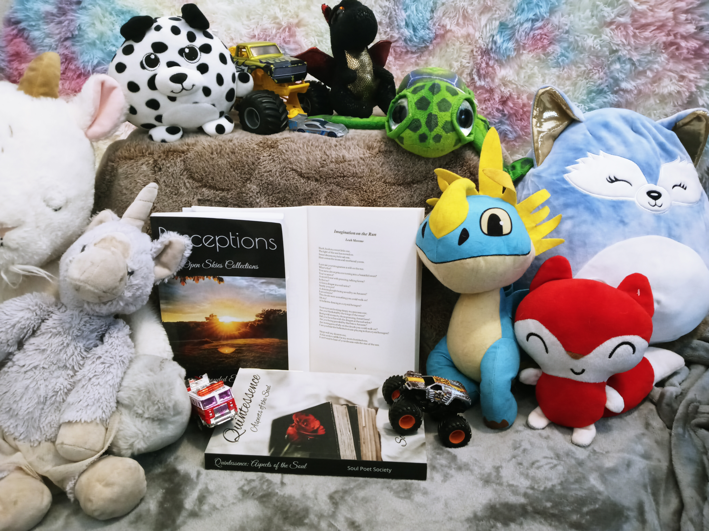

Biosite: Leah Moreno - An Artist, A Poet, A Friend, A Mother
Home
About
Hobbies
Art
Poetry
Interview
Link to Impspired
Leah Moreno - An Artist, A Poet, A Friend, A Mother

One of Leah's published poems - This one is dedicated to her children.
Links to purchase poetry collections on Amazon
Coming of Age (Children's poetry)
Aspects of Soul
Open Skies Collection